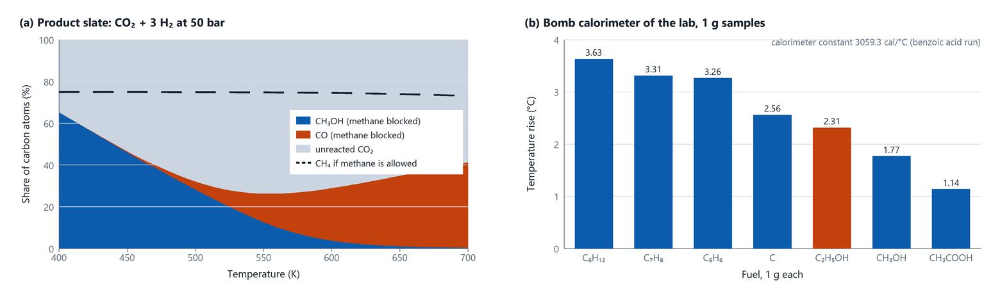

I built the solver as a web page that runs in any browser. The user picks one of 45 predefined reactions or types a new one. The solver first checks that the reaction is balanced, and only then calculates the heat of reaction, the entropy change and the Gibbs energy change at the chosen temperature. Every result also comes with plots and a short explanation in plain words. The database has 57 species and includes all 26 species suggested in the assignment. The data sources are listed at the end.
| What is calculated | Equation [1] |
|---|---|
| Sensible heat | Cp/R = A + BT + CT2 + DT−2; Q = R∫(Cp/R)dT |
| Heat of reaction | ΔH°298 = ΣνiΔH°f,i; ΔH°(T) = ΔH°298 + R∫(ΔCp°/R)dT |
| Entropy and Gibbs energy | ΔS°(T) = ΔS°298 + R∫(ΔCp°/R)dT/T; ΔG° = ΔH° − TΔS°; ln K = −ΔG°/RT |
| Effect of pressure | ΔH(T,P) = ΔH°(T) + ΣνiHiR(T,P), with HR from the equation of state closest to measured data |
| Combining reactions | ΔH = ΣmjΔHj and ΔG = ΣmjΔGj (Hess's law) |
| Bomb calorimeter | ΔUc = ΔHc − ΔngasRT; ΔT = (m × calorific value + corrections)/Ccal |
Product slate. In a real reactor several reactions compete for the same atoms. Here the user only chooses which species may exist, and the solver finds the mixture with the lowest total Gibbs energy. A product can also be switched off, which imitates a selective catalyst. For CO2 + 3H2 at 523 K and 50 bar, methane takes 74.9 % of the carbon if it is allowed. If it is switched off, methanol takes 20.6 % of the carbon and CO 7.5 % (Fig. a). Thermodynamics thus favours methane, and it is the catalyst that makes methanol possible.
Bomb calorimeter. This tab repeats our lab experiment on screen. The bomb is a closed vessel, so it measures ΔU and not ΔH, and the solver links the two with ΔH = ΔU + ΔngasRT. After a calibration with the benzoic acid run of the lab handout, it predicts the temperature rise of any fuel, for example 2.31 °C for 1 g of ethanol (Fig. b). It can also work backwards and name the fuel that best fits a measured rise.

Figure. (a) Where the carbon goes for CO2 + 3H2 at 50 bar. (b) Temperature rise for 1 g of each fuel in the lab calorimeter.
The assignment lists five stress tests. The solver passes all of them, and they can be run live in the Validation tab.
| Stress test | What the solver does |
|---|---|
| 1. Stoichiometry | CH4 + O2 → CO2 + H2O is rejected before any calculation, and the balanced form is offered. |
| 2. Cp assumption at 1000 K | Checked for all 40 predefined reactions whose Cp data reach 1000 K. A constant ΔCp puts ΔH° off by 9.0 kJ/mol on average and by up to 31.5 kJ/mol (benzene hydrogenation). For steam reforming, ΔH° is 225.3 kJ/mol with Cp(T), 238.8 with a constant ΔCp and 205.8 if ΔCp is ignored. |
| 3. Physical state | Methane combustion gives −890.7 kJ/mol with H2O(l) and −802.6 kJ/mol with H2O(g). The gap is the heat needed to vaporise two moles of water. The solver can also choose the phase itself, since it finds the boiling point of water (373.2 K) from its own data. |
| 4. Correlation validity | Each species has its own temperature range. Outside it, the result is shown with a warning. I checked this 1 K inside and 1 K outside both ends of the range for all 45 predefined reactions. |
| 5. Published work | ΔH°298 of eight reactions agrees with values from research papers within 0.5 kJ/mol [4]. |
Errors of the AI-generated solver that I found and corrected. The first versions of the solver gave the following wrong or misleading results.
| Type of error | What went wrong | How I corrected it |
|---|---|---|
| Physically unreasonable | For CO2 hydrogenation at 523 K and 100 bar, the first version predicted 48 % conversion. Water is a liquid at these conditions, but the code treated it as a gas. | The solver now detects this state and does not report a gas-phase value. |
| Incorrect data | The AI recalled ΔG°f of ammonia as −16,450 J/mol from an older edition. The current edition prints −16,400. | I compared every number with the printed tables. |
| Inconsistent results | Two rounded constants (0.675 and 0.722) made two results that should agree differ by 0.06 %. | The exact constants 0.6752 and 0.7224 are used. |
| Misleading text | The explanation said "practically no reaction" for ammonia synthesis at 723 K, although 43 % converts at 200 bar. | The text now refers to 1 bar, and the product slate shows the mixture at any pressure. |
| Misleading result | The calorimeter named ethylene oxide gas as the unknown sample, ahead of liquid ethanol. | Only liquids and solids are compared, since a gas cannot be weighed into a crucible. |
| Wrong concept | The standard state was described as 298.15 K and 1 bar, although it fixes only the pressure. | The wording is corrected in the app and in the guide. |
| Formula out of range | Below 298 K and above 2000 K the Cp formula of the textbook was used outside its range (29 % too low for CO2 at 200 K). | Data from NIST are used in these two ranges [2, 3]. |
| Missing physics | Every species stayed in the phase that was typed, so liquid water stayed a liquid even at 500 K. | The solver now finds the boiling point from its own data (373.2 K for water) and can use the stable phase. |
Two independent reviews of the code then found further issues, which I also fixed. All of them are listed in the repository, where 441 automated tests run on every change.
[1] J. M. Smith, H. C. Van Ness and M. M. Abbott, Introduction to Chemical Engineering Thermodynamics, 8th edition, McGraw-Hill. Equations of Chapters 3, 4, 6 and 14; property data of Tables B.1 and C.1 to C.4.
[2] NIST Chemistry WebBook, NIST Standard Reference Database 69, webbook.nist.gov. Hydrogen peroxide, acetic acid vapour, heat capacities outside the range of [1], and measured enthalpies of 24 real gases.
[3] M. W. Chase, NIST-JANAF Thermochemical Tables, 4th edition, 1998, janaf.nist.gov.
[4] Helmi et al., Molecules 21 (2016) 376, and the other papers listed in the Validation tab of the app.
[5] Course material: Chapter 4 slides and the bomb calorimeter lab handout.